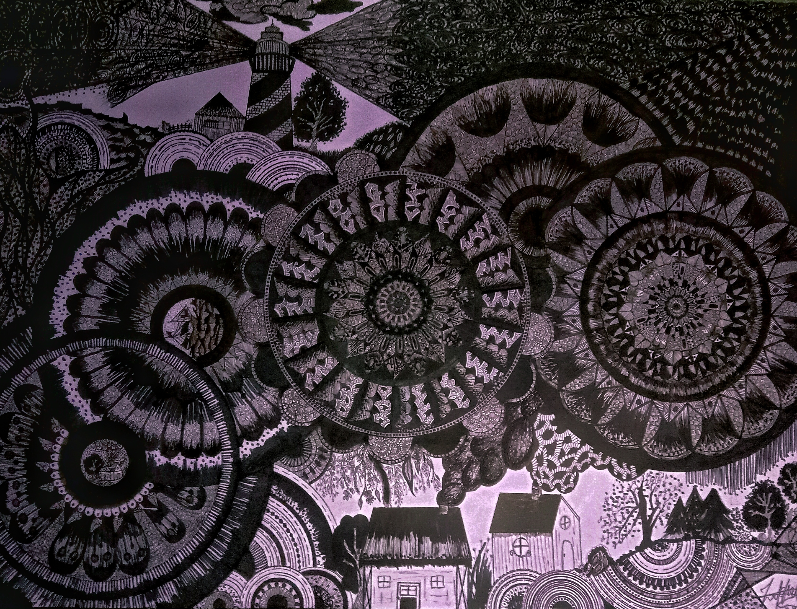
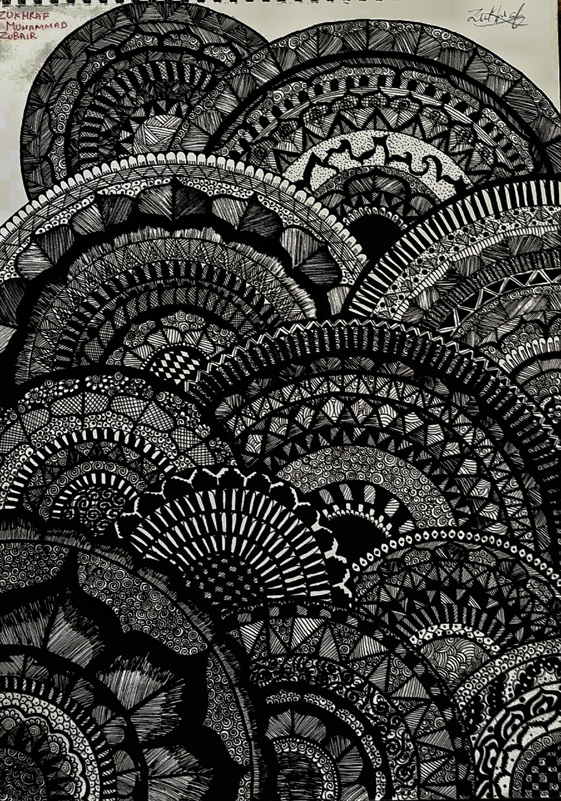
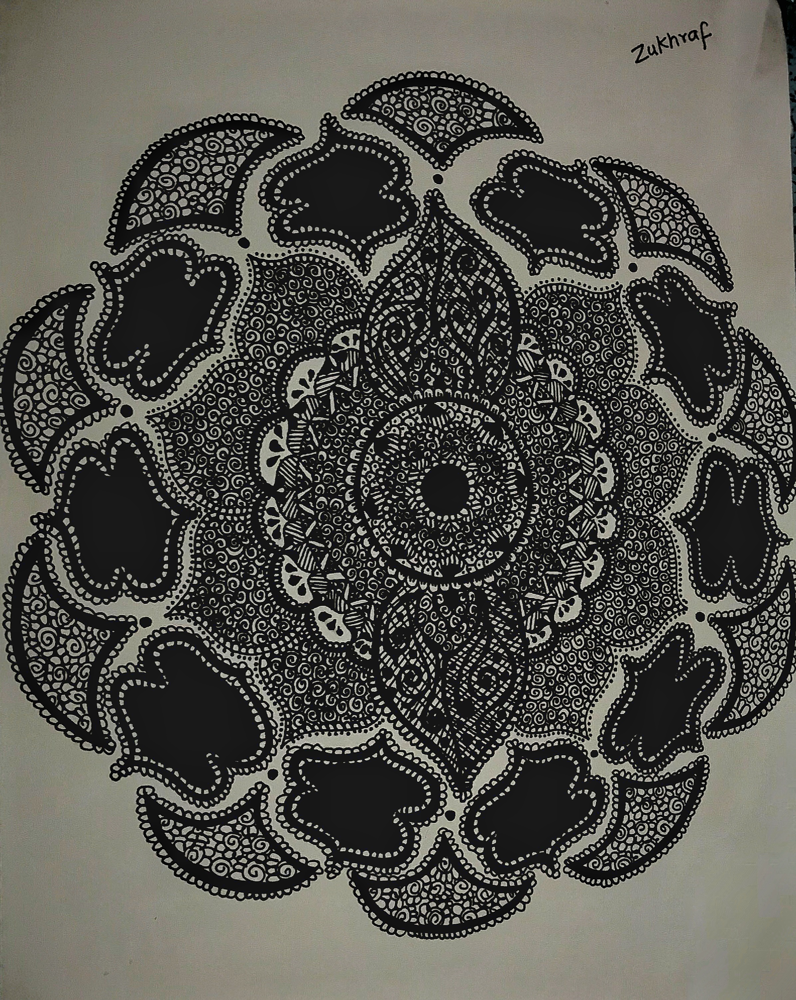

The Lighthouse
This mandala art shows a lighthouse that is always there. Drawn with patience and passion over an entire week, this mandala art reveals a lighthouse an unwavering symbol of hope and guidance even in the fiercest storm. Spending at least eight hours a day, the artist skillfully combined the calming symmetry of mandalas with the powerful symbolism of a lighthouse. The intricate patterns capture the balance between chaos and calm, while the lighthouse stands as a beacon of resilience. Each line, curve, and detail reflects dedication, making this artwork not just a visual delight but a heartfelt journey of focus, tranquility, and strength.
Eclipse of Patterns
 This black and white mandala is filled with detailed patterns and symmetrical designs, creating a sense of calm and focus without any distractions of color.This black and white mandala is filled with detailed patterns and symmetrical designs. With just black and white, the artwork has a calm and serene quality to it. The acute lines and repetitive forms give the impression of becoming lost in the artwork. Without the colors distracting you, the focus is purely on the shape and how well they fit together. It's a simple yet stunning artwork that shows how beautiful black and white can be.
Timeless Tapestry


This mandala uses black and white with touches of gold for a special, elegant look, mixing calmness with a warm glow. It shows the simplicity of black and white with the elegance of gold accents. The black and white patterns give it a calm, balanced feel, while the subtle golden highlights add a touch of warmth and luxury. It’s like a peaceful night sky kissed by the soft glow of starlight calm yet radiant, simple yet striking. Each golden touch feels like a gentle whisper, making the entire artwork look both grounded and graceful.